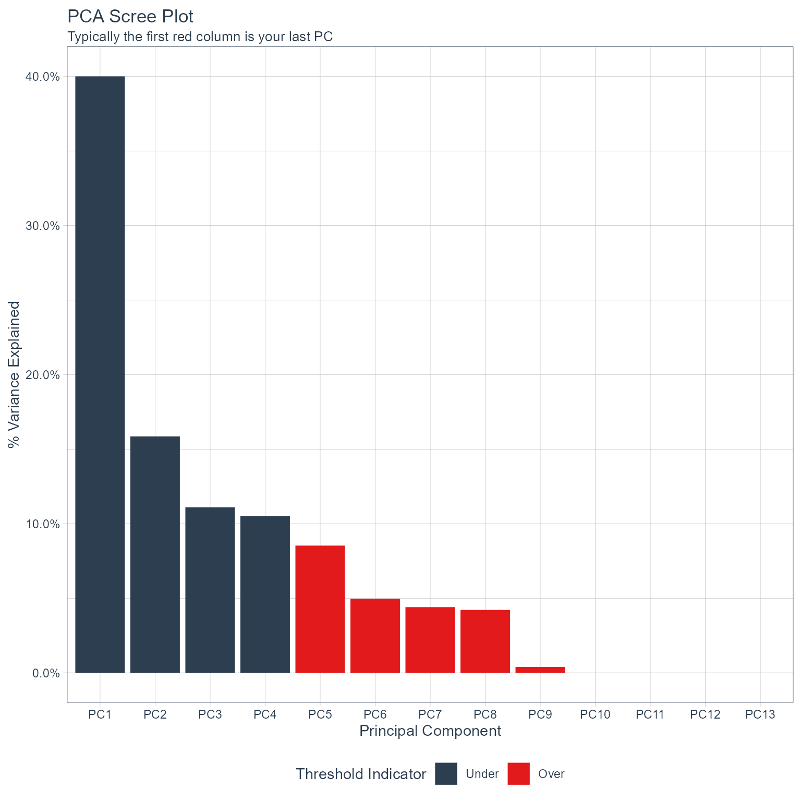

Getting Started with healthyR.ai
A Quick Introduction
Steven P. Sanderson II, MPH
2022-04-14
Source:vignettes/getting-started.Rmd
getting-started.RmdFirst of all, thank you for using healthyR.ai. If you
encounter issues or want to make a feature request, please visit https://github.com/spsanderson/healthyR.ai/issues
library(healthyR.ai)
#>
#> == Welcome to healthyR.ai ===========================================================================
#> If you find this package useful, please leave a star:
#> https://github.com/spsanderson/healthyR.ai'
#>
#> If you encounter a bug or want to request an enhancement please file an issue at:
#> https://github.com/spsanderson/healthyR.ai/issues
#>
#> Thank you for using healthyR.aiIn this should example we will showcase the
pca_your_recipe() function. This function takes only a few
arguments. The arguments are currently .data which is the
full data set that gets passed internally to the
recipes::bake() function, .recipe_object which
is a recipe you have already made and want to pass to the function in
order to perform the pca, and finally .threshold which is
the fraction of the variance that should be captured by the
components.
To start this walk through we will first load in a few libraries.
Libraries
suppressPackageStartupMessages(library(timetk))
suppressPackageStartupMessages(library(dplyr))
suppressPackageStartupMessages(library(purrr))
suppressPackageStartupMessages(library(healthyR.data))
suppressPackageStartupMessages(library(rsample))
suppressPackageStartupMessages(library(recipes))
suppressPackageStartupMessages(library(ggplot2))
suppressPackageStartupMessages(library(plotly))Data
Now that we have out libraries we can go ahead and get our data set ready.
Data Set
data_tbl <- healthyR_data %>%
select(visit_end_date_time) %>%
summarise_by_time(
.date_var = visit_end_date_time,
.by = "month",
value = n()
) %>%
set_names("date_col","value") %>%
filter_by_time(
.date_var = date_col,
.start_date = "2013",
.end_date = "2020"
)
head(data_tbl)
#> # A tibble: 6 x 2
#> date_col value
#> <dttm> <int>
#> 1 2013-01-01 00:00:00 2082
#> 2 2013-02-01 00:00:00 1719
#> 3 2013-03-01 00:00:00 1796
#> 4 2013-04-01 00:00:00 1865
#> 5 2013-05-01 00:00:00 2028
#> 6 2013-06-01 00:00:00 1813The data set is simple and by itself would not be at all useful for a
pca analysis since there is only one predictor, being time. In order to
facilitate the use of the function and this example, we will create a
splits object and a recipe object.
Splits
splits <- initial_split(data = data_tbl, prop = 0.8)
splits
#> <Analysis/Assess/Total>
#> <76/19/95>
head(training(splits))
#> # A tibble: 6 x 2
#> date_col value
#> <dttm> <int>
#> 1 2013-03-01 00:00:00 1796
#> 2 2019-06-01 00:00:00 1407
#> 3 2017-07-01 00:00:00 1535
#> 4 2020-01-01 00:00:00 1440
#> 5 2020-07-01 00:00:00 1056
#> 6 2019-12-01 00:00:00 1381Initial Recipe
rec_obj <- recipe(value ~ ., training(splits)) %>%
step_timeseries_signature(date_col) %>%
step_rm(matches("(iso$)|(xts$)|(hour)|(min)|(sec)|(am.pm)"))
rec_obj
#> Recipe
#>
#> Inputs:
#>
#> role #variables
#> outcome 1
#> predictor 1
#>
#> Operations:
#>
#> Timeseries signature features from date_col
#> Variables removed matches("(iso$)|(xts$)|(hour)|(min)|(sec)|(am.pm)")
get_juiced_data(rec_obj) %>% glimpse()
#> Rows: 76
#> Columns: 20
#> $ date_col <dttm> 2013-03-01, 2019-06-01, 2017-07-01, 2020-01-01, 20~
#> $ value <int> 1796, 1407, 1535, 1440, 1056, 1381, 1140, 1782, 161~
#> $ date_col_index.num <dbl> 1362096000, 1559347200, 1498867200, 1577836800, 159~
#> $ date_col_year <int> 2013, 2019, 2017, 2020, 2020, 2019, 2020, 2014, 201~
#> $ date_col_half <int> 1, 1, 2, 1, 2, 2, 2, 2, 2, 1, 2, 2, 2, 1, 2, 2, 1, ~
#> $ date_col_quarter <int> 1, 2, 3, 1, 3, 4, 3, 3, 4, 2, 4, 3, 4, 1, 3, 3, 2, ~
#> $ date_col_month <int> 3, 6, 7, 1, 7, 12, 8, 7, 10, 5, 10, 8, 12, 1, 7, 7,~
#> $ date_col_month.lbl <ord> March, June, July, January, July, December, August,~
#> $ date_col_day <int> 1, 1, 1, 1, 1, 1, 1, 1, 1, 1, 1, 1, 1, 1, 1, 1, 1, ~
#> $ date_col_wday <int> 6, 7, 7, 4, 4, 1, 7, 3, 1, 4, 7, 3, 6, 5, 4, 1, 4, ~
#> $ date_col_wday.lbl <ord> Friday, Saturday, Saturday, Wednesday, Wednesday, S~
#> $ date_col_mday <int> 1, 1, 1, 1, 1, 1, 1, 1, 1, 1, 1, 1, 1, 1, 1, 1, 1, ~
#> $ date_col_qday <int> 60, 62, 1, 1, 1, 62, 32, 1, 1, 31, 1, 32, 62, 1, 1,~
#> $ date_col_yday <int> 60, 152, 182, 1, 183, 335, 214, 182, 274, 121, 275,~
#> $ date_col_mweek <int> 5, 5, 5, 5, 5, 5, 5, 5, 5, 5, 5, 6, 5, 5, 5, 5, 5, ~
#> $ date_col_week <int> 9, 22, 26, 1, 27, 48, 31, 26, 40, 18, 40, 31, 48, 1~
#> $ date_col_week2 <int> 1, 0, 0, 1, 1, 0, 1, 0, 0, 0, 0, 1, 0, 1, 0, 0, 0, ~
#> $ date_col_week3 <int> 0, 1, 2, 1, 0, 0, 1, 2, 1, 0, 1, 1, 0, 1, 2, 2, 0, ~
#> $ date_col_week4 <int> 1, 2, 2, 1, 3, 0, 3, 2, 0, 2, 0, 3, 0, 1, 2, 2, 2, ~
#> $ date_col_mday7 <int> 1, 1, 1, 1, 1, 1, 1, 1, 1, 1, 1, 1, 1, 1, 1, 1, 1, ~Now that we have out initial recipe we can use the
pca_your_recipe() function.
pca_list <- pca_your_recipe(
.recipe_object = rec_obj,
.data = data_tbl,
.threshold = 0.8,
.top_n = 5
)Inspect PCA Output
The function returns a list object and does so
insvisible so you must assign the output to a variable, you
can then access the items of the list in the usual manner.
The following items are included in the output of the function:
- pca_transform - This is the pca recipe.
- variable_loadings
- variable_variance
- pca_estimates
- pca_juiced_estimates
- pca_baked_data
- pca_variance_df
- pca_variance_scree_plt
- pca_rotation_df
Lets start going down the list of items.
PCA Transform
This is the portion you will want to output to a variable as this is the recipe object itself that you will use further down the line of your work.
pca_rec_obj <- pca_list$pca_transform
pca_rec_obj
#> Recipe
#>
#> Inputs:
#>
#> role #variables
#> outcome 1
#> predictor 1
#>
#> Operations:
#>
#> Timeseries signature features from date_col
#> Variables removed matches("(iso$)|(xts$)|(hour)|(min)|(sec)|(am.pm)")
#> Centering for recipes::all_numeric()
#> Scaling for recipes::all_numeric()
#> Sparse, unbalanced variable filter on recipes::all_numeric()
#> PCA extraction with recipes::all_numeric_predictors()Variable Loadings
pca_list$variable_loadings
#> # A tibble: 169 x 4
#> terms value component id
#> <chr> <dbl> <chr> <chr>
#> 1 date_col_index.num 0.0281 PC1 pca_AO7Zu
#> 2 date_col_year 0.0791 PC1 pca_AO7Zu
#> 3 date_col_half -0.386 PC1 pca_AO7Zu
#> 4 date_col_quarter -0.433 PC1 pca_AO7Zu
#> 5 date_col_month -0.436 PC1 pca_AO7Zu
#> 6 date_col_wday 0.0165 PC1 pca_AO7Zu
#> 7 date_col_qday -0.0419 PC1 pca_AO7Zu
#> 8 date_col_yday -0.436 PC1 pca_AO7Zu
#> 9 date_col_mweek 0.0285 PC1 pca_AO7Zu
#> 10 date_col_week -0.436 PC1 pca_AO7Zu
#> # ... with 159 more rowsVariable Variance
pca_list$variable_variance
#> # A tibble: 52 x 4
#> terms value component id
#> <chr> <dbl> <int> <chr>
#> 1 variance 5.14 1 pca_AO7Zu
#> 2 variance 1.98 2 pca_AO7Zu
#> 3 variance 1.53 3 pca_AO7Zu
#> 4 variance 1.34 4 pca_AO7Zu
#> 5 variance 1.21 5 pca_AO7Zu
#> 6 variance 0.651 6 pca_AO7Zu
#> 7 variance 0.554 7 pca_AO7Zu
#> 8 variance 0.512 8 pca_AO7Zu
#> 9 variance 0.0710 9 pca_AO7Zu
#> 10 variance 0.000291 10 pca_AO7Zu
#> # ... with 42 more rowsPCA Estimates
pca_list$pca_estimates
#> Recipe
#>
#> Inputs:
#>
#> role #variables
#> outcome 1
#> predictor 1
#>
#> Training data contained 76 data points and no missing data.
#>
#> Operations:
#>
#> Timeseries signature features from date_col [trained]
#> Variables removed date_col_year.iso, date_col_month.xts, date_col_hour, d... [trained]
#> Centering for value, date_col_index.num, date_col_year, date_... [trained]
#> Scaling for value, date_col_index.num, date_col_year, date_... [trained]
#> Sparse, unbalanced variable filter removed date_col_day, date_col_mday, date_col_m... [trained]
#> PCA extraction with date_col_index.num, date_col_year, date_col_half... [trained]Jucied and Baked Data
pca_list$pca_juiced_estimates %>% glimpse()
#> Rows: 76
#> Columns: 9
#> $ date_col <dttm> 2013-03-01, 2019-06-01, 2017-07-01, 2020-01-01, 20~
#> $ value <dbl> 0.89997347, -0.47562448, -0.02298557, -0.35892851, ~
#> $ date_col_month.lbl <ord> March, June, July, January, July, December, August,~
#> $ date_col_wday.lbl <ord> Friday, Saturday, Saturday, Wednesday, Wednesday, S~
#> $ PC1 <dbl> 2.56913233, 0.76667552, -0.86998704, 3.63089652, 0.~
#> $ PC2 <dbl> 2.5621314, -1.2753464, -0.3813670, -1.5995897, -2.2~
#> $ PC3 <dbl> -1.67525684, -1.86663570, -0.11942190, 0.09839285, ~
#> $ PC4 <dbl> 0.18140989, -0.10811884, -1.15883770, 0.52330773, -~
#> $ PC5 <dbl> -0.75140537, -0.14956738, 1.95486567, 1.28011479, -~
pca_list$pca_baked_data %>% glimpse()
#> Rows: 95
#> Columns: 9
#> $ date_col <dttm> 2013-01-01, 2013-02-01, 2013-03-01, 2013-04-01, 20~
#> $ value <dbl> 1.9113385, 0.6276829, 0.8999735, 1.1439741, 1.72038~
#> $ date_col_month.lbl <ord> January, February, March, April, May, June, July, A~
#> $ date_col_wday.lbl <ord> Tuesday, Friday, Friday, Monday, Wednesday, Saturda~
#> $ PC1 <dbl> 3.3724917, 2.7933820, 2.5691323, 1.8207232, 1.00237~
#> $ PC2 <dbl> 2.454493, 2.511017, 2.562131, 2.245790, 2.378328, 2~
#> $ PC3 <dbl> 2.09963858, -0.34135949, -1.67525684, 2.31239635, -~
#> $ PC4 <dbl> 0.27856498, -0.89910721, 0.18140989, 0.37429206, 0.~
#> $ PC5 <dbl> -0.01338713, 1.15493143, -0.75140537, -0.34772794, ~Roatation Data
pca_list$pca_rotation_df %>% glimpse()
#> Rows: 13
#> Columns: 13
#> $ PC1 <dbl> 0.02806715, 0.07910265, -0.38591112, -0.43336003, -0.43626908, 0.~
#> $ PC2 <dbl> -0.70497666, -0.69477548, -0.07081169, -0.03748906, -0.03365893, ~
#> $ PC3 <dbl> -0.04908059, -0.04329049, 0.09993717, 0.06898284, -0.04599219, -0~
#> $ PC4 <dbl> 0.063939526, 0.066314496, -0.267347976, -0.004070033, -0.02393162~
#> $ PC5 <dbl> 0.01767873, 0.02878492, 0.04465477, 0.06752363, -0.09713598, 0.30~
#> $ PC6 <dbl> 0.014441464, 0.017258841, -0.296743649, -0.127834901, -0.02559010~
#> $ PC7 <dbl> 0.011328680, 0.008301201, 0.048765884, -0.077610187, 0.020248511,~
#> $ PC8 <dbl> -0.004635175, -0.002392786, 0.101109395, 0.003484482, -0.01745347~
#> $ PC9 <dbl> 0.016823132, -0.008675535, -0.813584131, 0.269257837, 0.213731659~
#> $ PC10 <dbl> -0.012788013, 0.010495291, -0.003390446, -0.303039493, -0.3691798~
#> $ PC11 <dbl> -0.0231755158, 0.0244942880, -0.0015317231, -0.0394033968, 0.6631~
#> $ PC12 <dbl> 0.0056039118, -0.0052250646, 0.0032973343, 0.7823979364, -0.41624~
#> $ PC13 <dbl> 7.028777e-01, -7.090447e-01, -1.254919e-04, -3.240212e-02, -1.492~Variance and Scree Plot
pca_list$pca_variance_df %>% glimpse()
#> Rows: 13
#> Columns: 6
#> $ PC <chr> "PC1", "PC2", "PC3", "PC4", "PC5", "PC6", "PC7", "PC8"~
#> $ var_explained <dbl> 3.953508e-01, 1.526333e-01, 1.179693e-01, 1.033486e-01~
#> $ var_pct_txt <chr> "39.54%", "15.26%", "11.80%", "10.33%", "9.31%", "5.00~
#> $ cum_var_pct <dbl> 0.3953508, 0.5479841, 0.6659533, 0.7693019, 0.8624287,~
#> $ cum_var_pct_txt <chr> "39.54%", "54.80%", "66.60%", "76.93%", "86.24%", "91.~
#> $ ou_threshold <fct> Under, Under, Under, Under, Over, Over, Over, Over, Ov~
pca_list$pca_variance_scree_plt